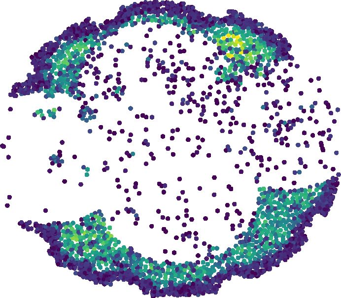
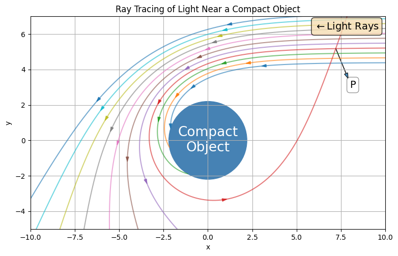
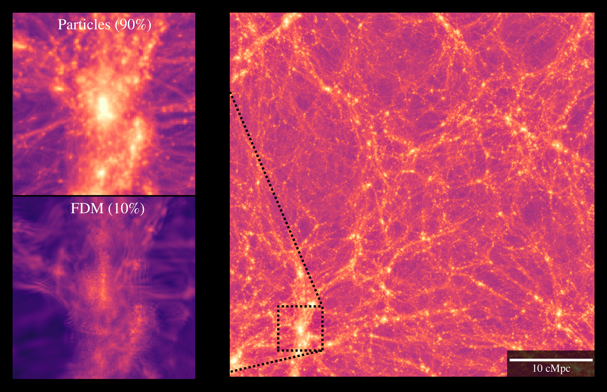
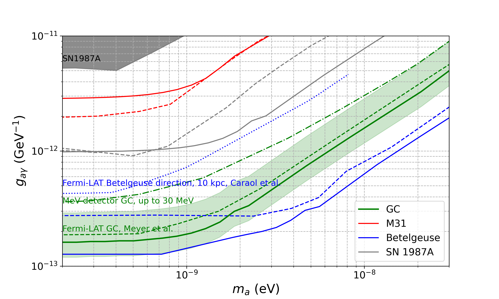
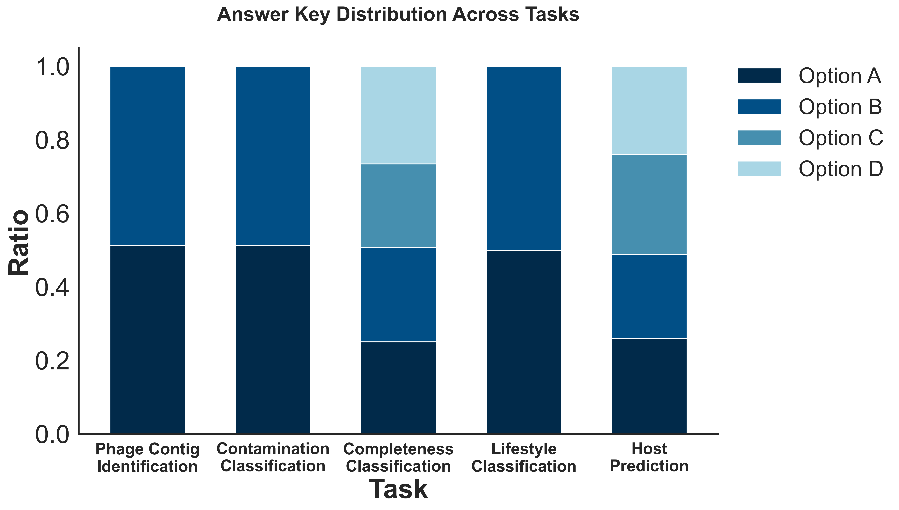

Galaxy Clusters
Using $Λ$CDM and Padé-(2,1) cosmography, we study directional variations in the Hubble constant, $H_0$, using galaxy cluster and Type Ia Supernovae (from Pantheon Plus) by the hemisphere decomposition method.…
Using $Λ$CDM and Padé-(2,1) cosmography, we study directional variations in the Hubble constant, $H_0$, using galaxy cluster and Type Ia Supernovae (from Pantheon Plus) by the hemisphere decomposition method.…

Deep spectroscopic samples can be used to improve photometric redshift (photo-$z$) estimates and reduce uncertainties on redshift distributions. Such improvements can increase the cosmological constraining power of large imaging-based experiments such as the Vera C.…
Detection of parity violation on cosmological scales would have profound implications for fundamental physics. Motivated in part by recent measurements of parity-odd four-point correlation functions in BOSS and DESI luminous red galaxy samples, which probe parity violation in the scalar sector, we p…
We explore the lowest mass limit that can be placed on the halo mass function in CDM using 28 strong gravitational lenses. For this purpose, we study an extreme model in which the halo mass function and mass-concentration relation follow CDM, with a sharp cutoff at some mass scale, $m_{\rm{low}}$.…

We propose a novel concept of astrophysical mirroring in the schwarzschild framework, which emerges as a direct consequence of gravitational lensing effects occurring in the immediate vicinity of extremely dense massive objects within spacetime.…

We investigate Lyman-alpha forest flux statistics in mixed fuzzy dark matter (FDM) and cold dark matter (CDM) cosmologies using the Fluctuating Gunn-Peterson Approximation (FGPA) applied to hybrid Schrödinger-Poisson and N-body simulations.…

Axion-like particles (ALPs) produced via the Primakoff process in the cores of Galactic core-collapse supernovae (SNe) could convert into MeV-energy gamma-rays through interactions with the Milky Way's magnetic field.…
Too light primordial black holes evaporate and are therefore strongly constrained by various bounds, e.g. Cosmic Microwave Background distortion. However, if they are formed strongly clustered, the corresponding haloes may collapse in heavier black holes which may form the entirety of the dark matte…
We report a 3.3 $σ$ measurement of coherent elastic neutrino-nucleus scattering from solar $^8$B neutrinos using a 6.77 t$\times$yr exposure from the XENONnT experiment, inferring a solar $^8$B neutrino flux of $(5_{-2}^{+3})\times 10^6\,\mathrm{cm}^{-2}\mathrm{s}^{-1}$, consistent with previous mea…

Bacteriophages, often referred to as the dark matter of the biosphere, play a critical role in regulating microbial ecosystems and in antibiotic alternatives. Thus, accurate interpretation of their genomes holds significant scientific and practical value.…